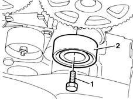
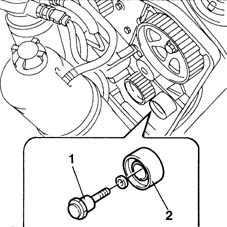

1032C30 fixed timing system tensioner - r + r with timing belt removed
- Path
- Procedures > 10 ENGINE UNIT > 1032 TIMING SYSTEM > 1032C timing system tensioners > 1032C30 fixed timing system tensioner - r + r with timing belt removed
- Kind
- repair procedure (removal / refitting; the operation number is the code)
- Applies to
- all engines; all production periods
- Interactive page
- https://sloeber94.github.io/elrnDB-fMltpl/en/#/2891229
Applies to: engines: 1.6 16v; all production periods
 Removing
Removing
 Refitting
Refitting1. Withdraw the retaining bolt.
2. Remove the fixed timing belt tensioner.

Applies to: engines: 1.6 16v; all production periods
Refitting
RemovingPosition the fixed tensioner in its seat.
Tighten the fixing bolt to torque.
 | Fastening | Component | Ø | Value (daNm) |
|---|---|---|---|---|
- | Bolt | FIXED TENSIONER | M12 x 1.25 | 8.7 |
Applies to: engines: 1.9 JTD 8V; all production periods
Removing
Refitting1. Unscrew the retaining bolt.
2. Remove the fixed timing belt tensioner.

Applies to: engines: 1.9 JTD 8V; all production periods
Refitting
RemovingFit the fixed timing belt tensioner.
Tighten the retaining bolt to torque.
| Fastening | Component | Ø | Value (daNm) |
|---|---|---|---|---|
- | Bolt | FIXED TENSIONER | M8 | 2.5 |